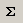

Funcions del Calc
Les funcions són fórmules especials que ens ofereix el full de càlcul per facilitar la realització de les operacions. Les finalitats en l'ús de les funcions són dues: estalviar l'escriptura de fórmules llargues, quan hi intervenen gran quantitat de cel·les, i facilitar la definició de fórmules que ofereixin una dificultat especial.
Totes les funcions consten d'un nom i d'un conjunt d'arguments. Els arguments d'una funció s'escriuen separats per un punt i coma (;) i entre parèntesis, just a continuació del nom de la funció com, per exemple, =MAX(A1;A2) que calcula el valor màxim dels arguments A1 i A2. Els arguments poden ser referències a cel·les, rangs de cel·les o, fins i tot, el resultat d'una altra funció.
Hi ha funcions de molts tipus atenent-ne la finalitat: financeres, matemàtiques, estadístiques, lògiques, etc.; per tant, la seva utilització demana coneixements sobre l'aspecte de la funció que hom desitja aplicar, no obstant això, l'OpenOffice.org Calc ofereix un assistent, Auxiliar de funcions, que permet inserir funcions i proporciona ajuda sobre la utilitat de la funció i els requisits que han de complir els arguments. També disposa del botó  Suma que calcula la suma de les cel·les que quedin per sobre o a l'esquerra de la cel·la en què s'insereix la suma.
Les funcions disponibles en l'OpenOffice.org Calc són nombroses. Farem referència, tan sols, a les següents:
ABS()
- ABS(Ref1): Retorna el valor absolut del valor que prengui l'argument.
ALEATENTRE()
- ALEATENTRE(Inferior;Superior): Retorna un nombre enter aleatori entre el límits inferior i superior indicats. El valor retornat també pot ser igual als valors inferior i superior.
ARRELQ()
- ARRELQ(Arg): Retorna l'arrel quadrada del valor que prengui l'argument. Aquest ha de ser un valor numèric no negatiu.
COMPTA()
- COMPTA(Ref1;Ref2; … ;Ref30): Compta la quantitat de valors numèrics continguts a la llista d'arguments. Els arguments poden fer referència a valors numèrics o de text, però la funció comptarà només els que són nombres.
COMPTAA()
- COMPTAA(Ref1;Ref2; … ;Ref30): Compta la quantitat d'arguments, dels indicats a la llista, que tenen valor independentment que aquest sigui numèric o de text.
COMPTASI()
- COMPTASI(Àrea,Criteri): Compta la quantitat de cel·les de Àrea que compleixen la condició indicada a Criteri.
CONCATENA() / &
- CONCATENA(Ref1;Ref2; … ;Ref30): Combina en un sol text, els textos corresponents als arguments indicats en el parèntesi.
- &: Actua com a operador de concatenació de textos. Ex.: ="El" & " millor" & " resultat", dóna per resultat El millor resultat
CONSULTA()
- CONSULTA(Criteri de cerca;Vector de cerca;Vector de resultat): Cerca el valor indicat en Criteri de cerca en l'àrea d'una fila o una columna indicada en Vector de cerca. El resultat donat és la cel·la del Vector de resultat que té el mateix índex que el trobat en Vector de cerca.
CONSULTAH()
- CONSULTAH(Criteri;Matriu;Índex;Ordenat): Cerca un valor i una referència en les cel·les situades per sota de la matriu seleccionada. Aquesta funció comprova si la primera fila de la matriu conté un cert valor. La funció retorna el valor situat en la fila de la matriu indicada a l' índex, en la mateixa columna. La funció de cerca admet expressions regulars. Es pot escriure "tod*" al criteri de cerca per a cercar la primera aparició de "tod" seguit de qualsevol caràcter.
El valor Ordenat és optatiu i indica si la primera fila està ordenada en forma ascendent. La cerca és més ràpida si la fila està ordenada.
CONSULTAV()
- CONSULTAV(Criteri;Matriu;Índex;Ordenat): Cerca un valor i una referència en les cel·les situades a la dreta de la matriu seleccionada. Aquesta funció comprova si la primera columna de la matriu conté un cert valor. La funció retorna el valor situat en la columna de la matriu indicada a l' índex, en la mateixa fila. La funció admet expressions regulars.
Com a la funció anterior, el valor Ordenat és optatiu.
ENT()
- ENT(Ref1): Retorna l'enter inferior més pròxim al valor que prengui l'argument.
EXACTE()
- EXACTE(Text_1;Text_2): Retorna VERITAT si els dos textos són idèntics; en cas contrari, retorna FALS.
HORADEC()
- HORADEC(Hora;Minut;segon): Determina el valor d'hora a partir dels detalls d'hora, minut i segon.
I()
- I(Valor lògic 1;Valor lògic 2;…;Valor lògic 30): Retorna VERITAT si tots els arguments de la funció són certs; en cas contrari, retorna FALS. Cada un dels arguments són condicions que s'han de verificar i que poden ser certes o falses.
INICIALMAJUSC()
- INICIALMAJUSC("Text"): Escriu amb majúscula la primera lletra de totes les paraules d'una cadena de text.
Sintaxi
LONG()
- LONG(Text): Indica la quantitat de caràcters de Text, inclosos els espais en blanc i signes de puntuació.
MAJUSC()
- MAJUSC(Text).: Converteix Text a majúscules.
MAX()
- MAX(Ref1;Ref2; … ;Ref30): Retorna el valor més gran de la llista d'arguments de la funció.
MCM()
- MCM(Ref1;Ref2; … ;Ref30): Retorna el mínim comú múltiple dels arguments.
MCD()
- MCD(Ref1;Ref2; … ;Ref30): Retorna el màxim comú divisior dels arguments.
MEDIANA()
- MEDIANA(Ref1;Ref2; … ;Ref30): Calcula el valor que ocupa la posició central dels valors representats pels arguments. Si el nombre d'arguments és parell, retorna la mitjana aritmètica dels dos valors que ocupen la posició central.
MIG()
- MIG(Text;Inici;Número): Retorna una cadena parcial d'un text. Inici indica la posició a partir de la qual s'extraurà la cadena parcial; Número indica la quantitat de caràcters que tindrà la cadena parcial.
MIN()
- MIN(Ref1;Ref2; … ;Ref30): Retorna el valor més petit de la llista d'arguments de la funció.
MITJANA()
- MITJANA(Ref1;Ref2; … ;Ref30): Calcula la mitjana aritmètica del conjunt dels arguments de la funció. En el càlcul s'ignoren les cel·les que continguin text.
MITJANAA()
- MITJANAA(Ref1;Ref2; … ;Ref30): Calcula la mitjana aritmètica del conjunt dels arguments de la funció. Els textos de la mostra s'avaluen com a zero.
MOD()
- MOD(Ref1;Ref2): Retorna la resta de la divisió entre els valors que prenguin el primer i el segon argument de la funció.
O()
- O(Valor lògic 1;Valor lògic 2;…;Valor lògic 30): Retorna VERITAT si un dels arguments és cert; si tots són fals, retornarà FALS. Cada un dels arguments són condicions que s'han de verificar i que poden ser certes o falses.
PI()
- PI(): Retorna el valor del número pi (3.141593…). Aquesta funció no fa servir arguments i, per tant, no s'ha d'escriure res al parèntesi.
POTENCIA()
- POTENCIA(Ref1;Ref2): Retorna el valor de la potència que té com a base el valor del primer argument i, per exponent, el valor del segon argument.
QUOCIENT()
- QUOCIENT(Ref1;Ref2): Retorna la part entera de la divisió entre els dos arguments. El primer valor representa el dividend i, el segon, el divisor.
RETALLA()
- RETALLA(Text): Elimina de Text els espais en blanc extra.
REPT()
- REPT(Ref1;Ref2): Repeteix el text que correspongui al primer argument, tantes vegades com el valor representat pel segon argument.
ROMA()
- ROMA(Número,Mode): Converteix Número en número romà. El número ha d'estar comprès entre 0 i 3999. Mode ha de ser un valor entre 0 i 4 i que, com més augmenti, més simplificarà el número romà.
SI()
- SI(Verificació;Retorna si cert;Retorna si fals): En funció del resultat del primer argument, veritat o fals, la funció retornarà el valor indicat al segon o al tercer argument. Si no s'indiquen els valors a retornar, la funció retorna el resultat de la verificació (VERITAT o FALS).
SUBSTITUEIX()
- SUBSTITUEIX(Text;Text de cerca;Text nou;Aparició): Reemplaça un fragment de text (Text de cerca) per un altre (Text nou) dins d'una cadena de caràcters (Text). Aparició és un argument opcional que indica quin número d'aparició s'ha de substituir; si no s'indica, el reemplaçament es realitzarà tantes vegades com es trobi el text de cerca.
SUMA()
- SUMA(Ref1;Ref2; … ;Ref30): Calcula la suma dels arguments indicats al parèntesi.
T()
- T(Arg): Retorna una cadena de text si Arg és un text; en cas contrari, retorna una cadena buida "".
TRUNCA()
- TRUNCA(Número;Compta): Trunca els llocs decimals d'un número mostrant, només, la quantitat de decimals que s'indica en Compta
VALOR()
- VALOR(Text): Converteix, el text corresponent a l'argument, en un número.